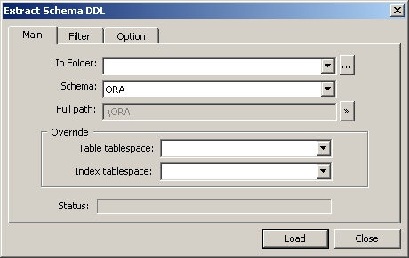
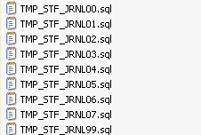
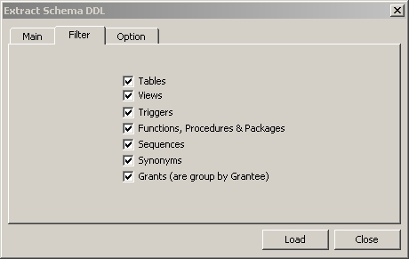

Extract all DDL scripts for the indicated schema. SQLTools will create a
schema-named specific subfolder in the indicated folder. In this
subfolder, each object DDL script
will be loaded in a separate .sql file :


You can choose the objects type for which you want to load DDL scripts
with "Filter" tab :

The "Option" tab allows you to choose particular options for
loading :